01
Weddings
Cinematic wedding films in Oxford, Jackson & across Mississippi — every glance, every tear, kept forever.
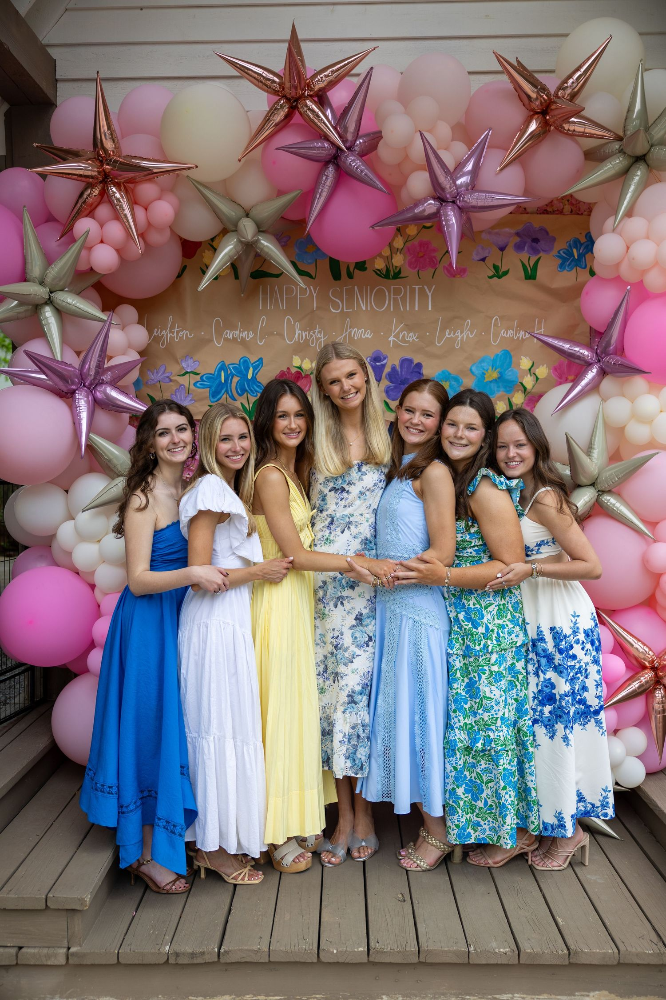
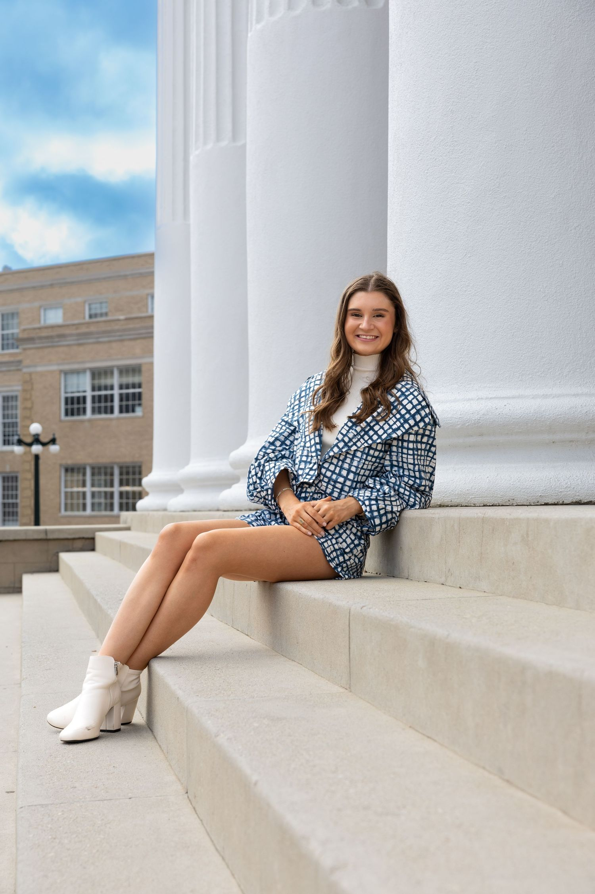
Every project is a chance to tell a meaningful story — not just to document it, but to connect.
Since 2019 I've worked with couples, seniors, and brands across Oxford, Madison, and the Jackson metro who value authentic visuals and an honest, collaborative process.
Cinematic wedding films in Oxford, Jackson & across Mississippi — every glance, every tear, kept forever.
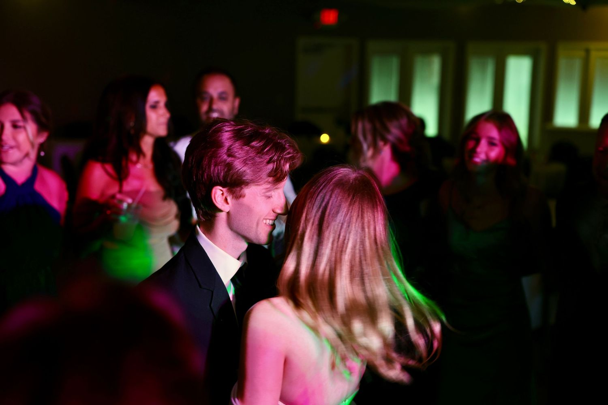
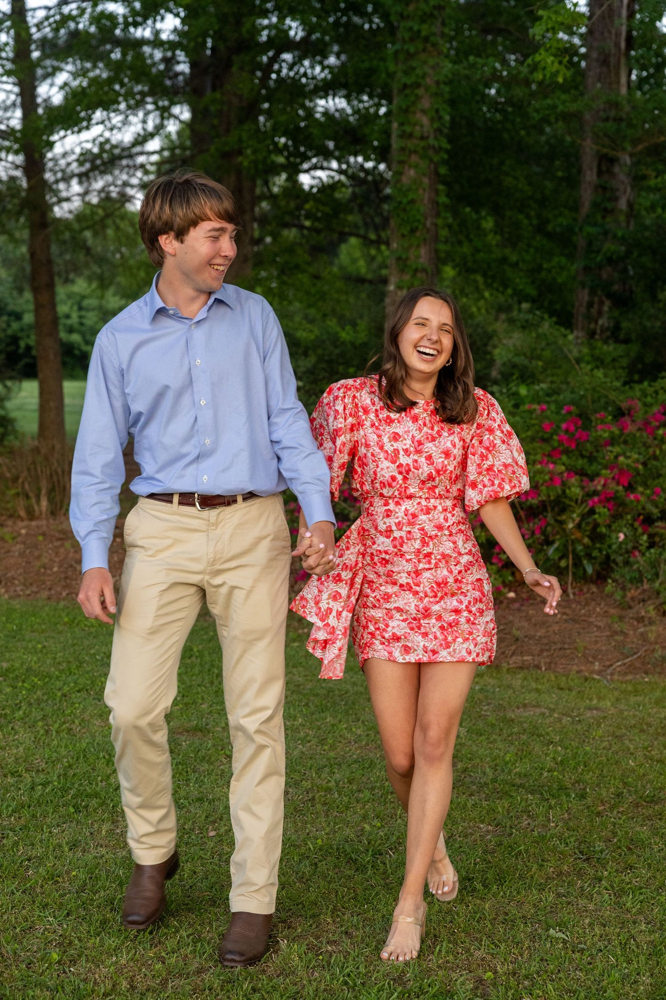
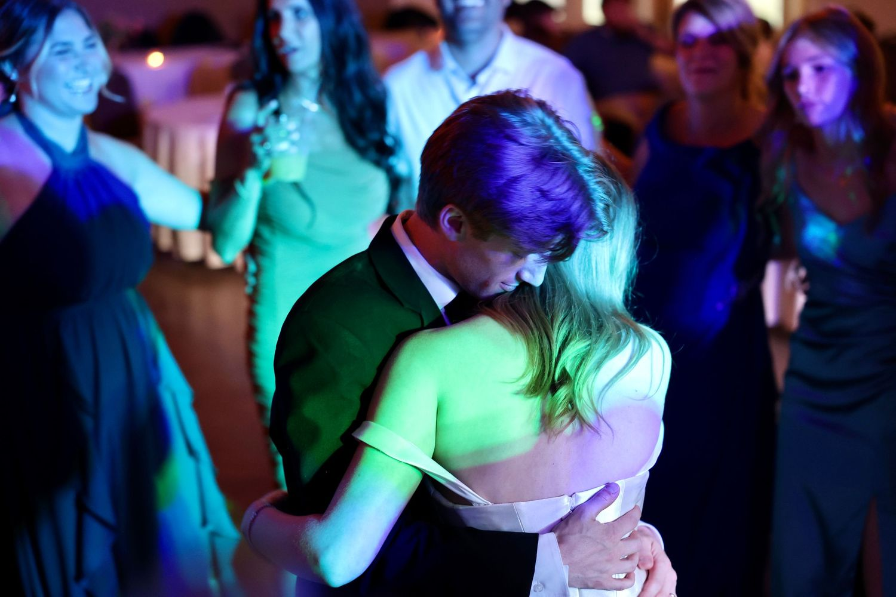
Bold, editorial senior portraits — from Ole Miss to the Jackson metro — that actually feel like you, not the same shot everyone else has.
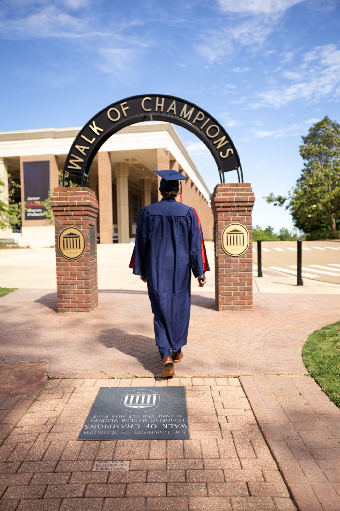
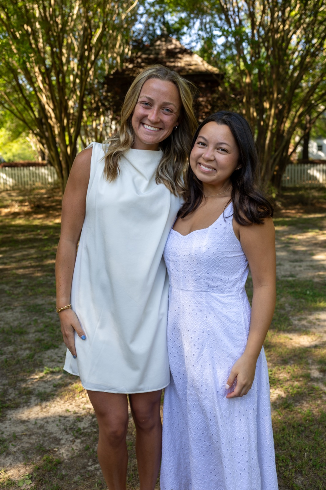
Recruitment, socials & game day at Ole Miss — all the energy of the chapter, kept. Ask about recruitment packages.
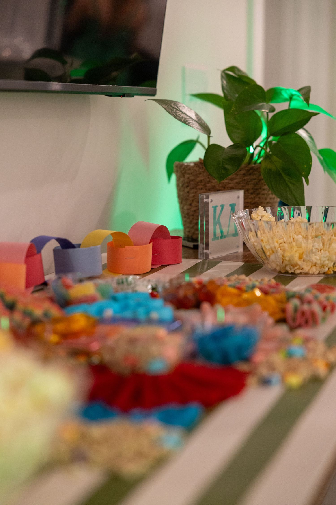
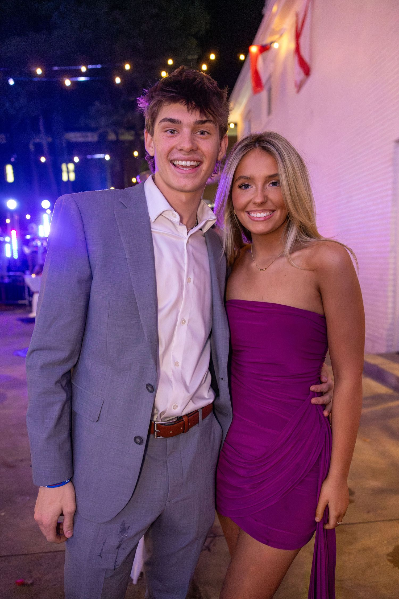
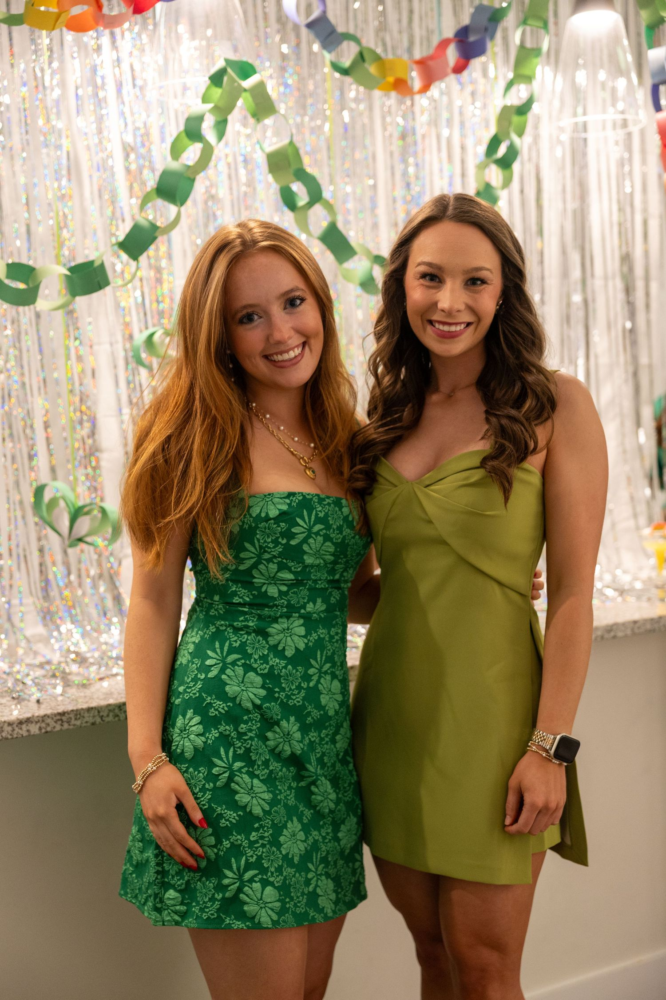
Aerial, real estate & brand work across Mississippi that makes your business look the part — on the ground and in the air.
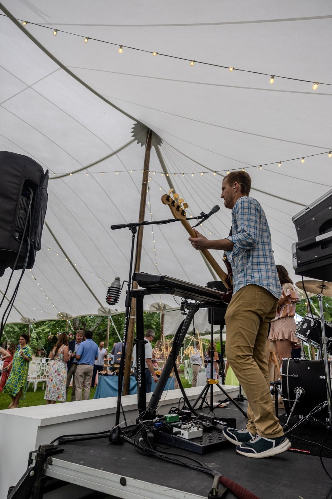

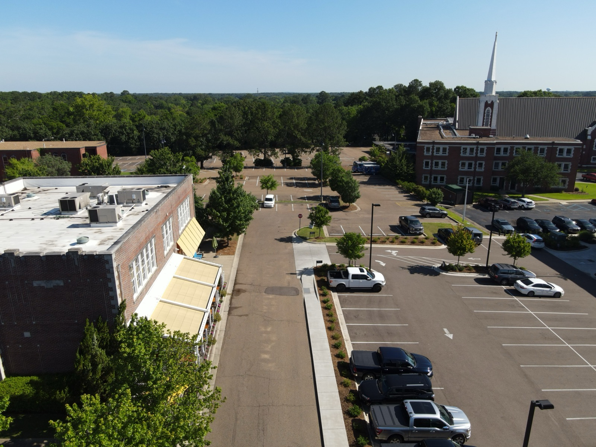
Let's bring your vision to life. Tell me about your project.